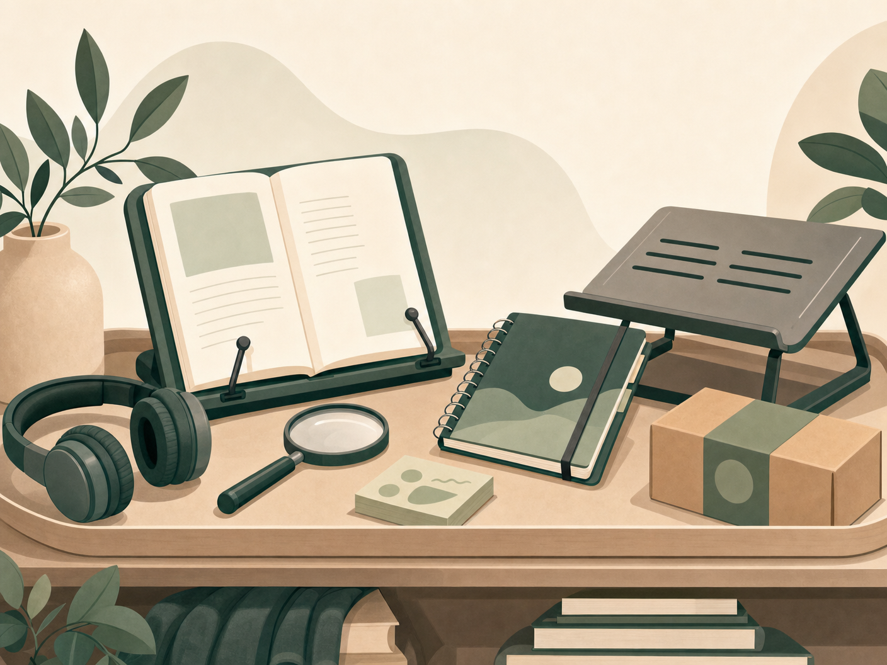

Organização
Planners, cadernos, post-its, fichários, quadros, etiquetas, divisórias e organizadores de mesa.
Achadinhos de Estudo
Os achadinhos são acessórios. O centro do site é o conteúdo de valor, o método e a construção de uma rotina possível.

Alguns links podem ser links de afiliada. Isso significa que eu posso receber uma pequena comissão caso você compre por eles, sem custo adicional para você. As indicações devem ser avaliadas conforme sua realidade, necessidade e orçamento.
Planners, cadernos, post-its, fichários, quadros, etiquetas, divisórias e organizadores de mesa.
Cadeira, apoio lombar, apoio de pés, suporte para notebook, suporte para livros e almofadas.
Tablet, fone, teclado, mouse, monitor, luminária, cabos e ferramentas para estudo digital.
Mouse vertical, apoio de punho, suporte de leitura, teclado ergonômico e recursos visuais.
Marca-textos, canetas, fichas, etiquetas, divisórias, cadernos inteligentes e pastas.
Livros úteis, legislação, materiais de revisão e recursos para consulta rápida.
Esta indicacao ajuda concurseiros a escolherem o melhor formato de material de estudo para sua preparacao. Entender as diferencas entre livro fisico e PDF pode otimizar o aprendizado e a rotina de estudos.
Para pessoas com deficiencia, o formato PDF pode oferecer maior acessibilidade. É possivel ajustar o tamanho da fonte, o contraste e utilizar leitores de tela, beneficiando quem tem deficiencia visual. Para pessoas com deficiencia fisica, o PDF elimina a necessidade de manusear livros pesados, permitindo interacao por meio de tecnologias assistivas. A funcao de busca em PDFs facilita a localizacao de conteudos especificos, auxiliando tambem quem possui deficiencia cognitiva.
Encontrado na Shopee
Suporte para Livros, Apostilas e Tablets →Link de afiliada. Sem custo adicional para voce.
As recomendações serão organizadas por utilidade, custo-benefício, acessibilidade, durabilidade e relação com a rotina de estudos. A página não existe para incentivar consumo por impulso, mas para facilitar escolhas mais conscientes.